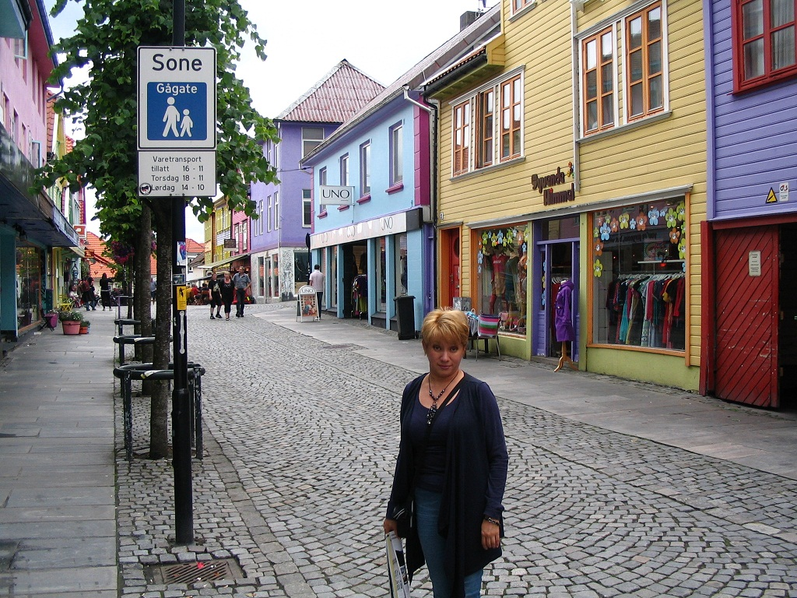

 Noorwegen, 2012
Elya Wiersma is in 1967 geboren in de Oezbeekse stad Tasjkent, een mooie stad tussen de bergen. Daar heeft ze een studie gedaan. Vanaf haar kindertijd tekende ze op school en ze heeft meegedaan aan vele buitenschoolse activiteiten. In die tijd heeft ze ook Lenin getekend en toen een waarschuwing gekregen, want het was destijds verboden om politieke leiders af te beelden. Maar ze stopte niet en bleef groeien op dit gebied. Haar kennissen en vriendinnen vonden haar kunstwerken erg mooi. In 2004 is ze met een Nederlander getrouwd. Sindsdien heeft ze veel gereisd met haar man. Ze is geboren in een woestijn; het is echter de zee die haar aanspreekt in haar schilderijen. In haar werk geeft zij vorm aan haar interpretatie van de werkelijkheid. Zij geeft haar ervaringen van ruimte en belevingen weer van landschappen en natuurlijke vormen. Elya houdt van de natuur met haar prachtige kleuren, vormen en structuren. Zij wil de grootsheid en de uitgestrektheid, het ongerepte van vooral de natuur laten zien. In haar werken komen licht, schaduw en contrast sterk tot uitdrukking. Haar landschappen kenmerken zich door prachtige kleurencombinaties die een bijzondere stemming teweeg brengen. De door haar gebruikte technieken zijn acryl.